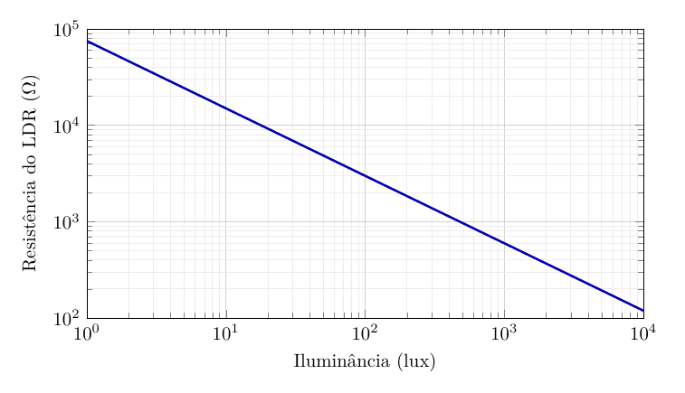
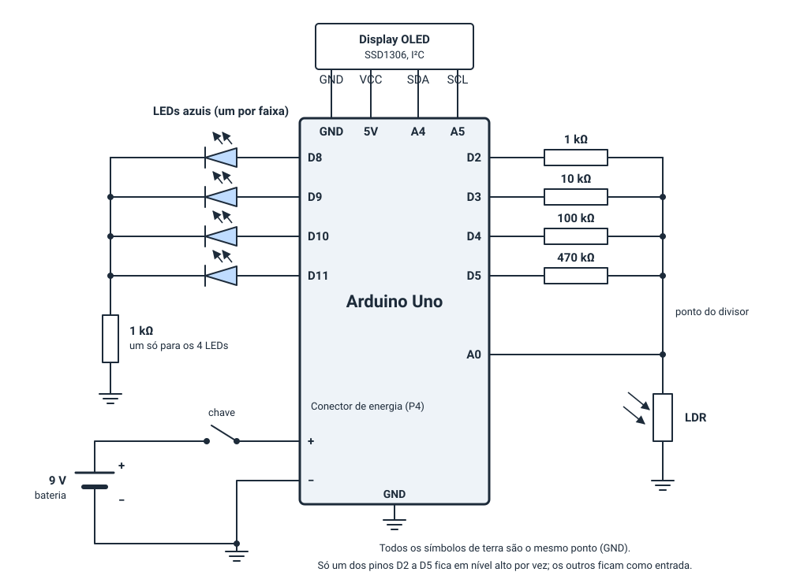

Documentação
Resumo, figuras e referências do LUXIF: a fundamentação teórica, o circuito e a análise das faixas de medição de um luxímetro simples e replicável.
Resumo
A medição da intensidade luminosa é uma etapa importante em experimentos de óptica e em aplicações de monitoramento ambiental, mas luxímetros comerciais são caros. Este trabalho apresenta o LUXIF, um projeto que mostra como montar um luxímetro simples e replicável, com microcontrolador e bateria, sem a pretensão de ser um instrumento de precisão. O sensor é um fotoresistor (LDR) de 10 mm, que forma um divisor de tensão com um entre quatro resistores de referência, escolhido automaticamente por um Arduino Uno conforme a leitura do conversor analógico-digital, o que amplia a faixa útil de medição e melhora o aproveitamento da sua resolução. A faixa em uso é indicada por LEDs que compartilham um único resistor, e o valor calculado em lux é exibido em um display OLED. O circuito é alimentado por uma bateria de 9 V ligada ao conector de alimentação da placa. A análise teórica indica que as quatro faixas se sobrepõem e cobrem, juntas, resistências de cerca de 100 Ω a 4 MΩ, o que corresponde a cerca de 0,003 a 11 000 lux. Por causa de um projeto de extensão, acrescentou-se uma versão opcional com ESP32, que transmite as leituras por Wi-Fi para uma página web.
Palavras-chave: fotoresistor; instrumentação eletrônica; divisor de tensão; iluminância; Arduino; ESP32; sensores.
Figuras



Referências
- HALLIDAY, David; RESNICK, Robert; WALKER, Jearl. Fundamentos de Física: Óptica e Física Moderna. 10. ed. Rio de Janeiro: LTC, 2016.
- SCHERZ, Paul; MONK, Simon. Practical Electronics for Inventors. 3. ed. New York: McGraw-Hill Education TAB, 2013.
- ARDUINO. Arduino Uno Rev3: documentação técnica. [S.l.]: Arduino, [s.d.]. Disponível em: docs.arduino.cc.
- ESPRESSIF SYSTEMS. ESP32 Series Datasheet. Xangai: Espressif Systems, [s.d.]. Disponível em: espressif.com.
- OASIS. MQTT Version 3.1.1. OASIS Standard, 2014. Disponível em: docs.oasis-open.org.
- FETTE, Ian; MELNIKOV, Alexey. RFC 6455: The WebSocket Protocol. Internet Engineering Task Force, 2011. Disponível em: rfc-editor.org.